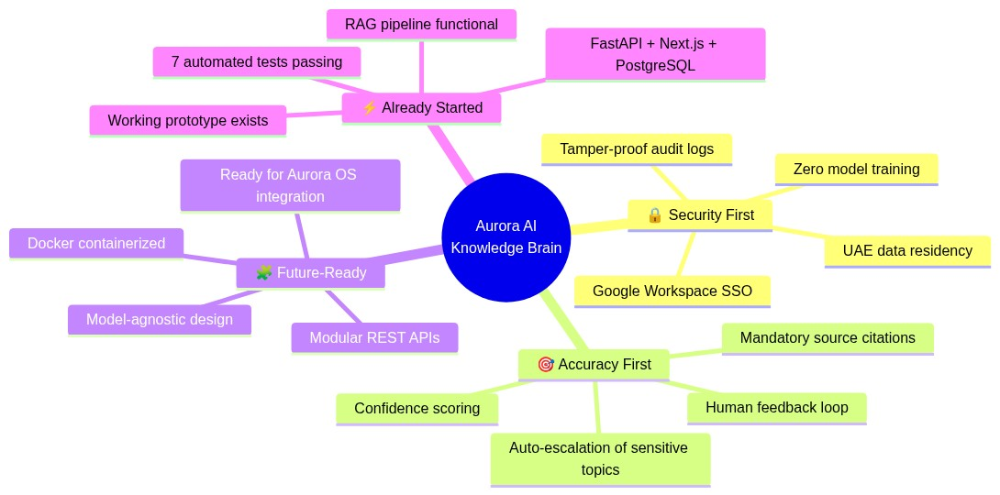
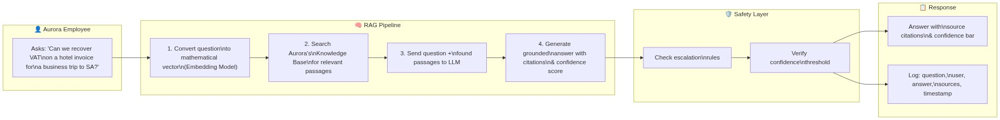
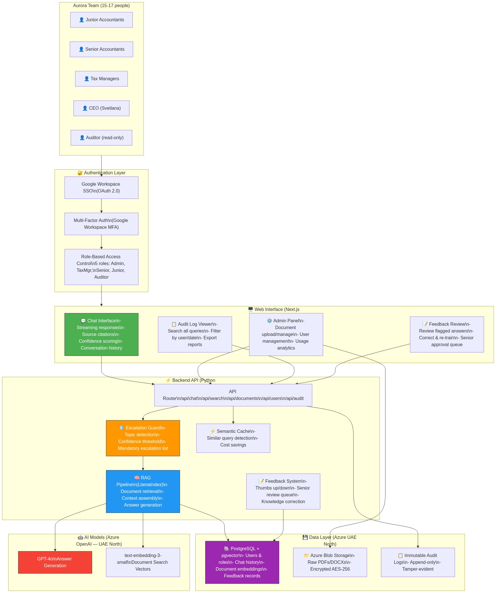
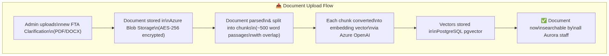
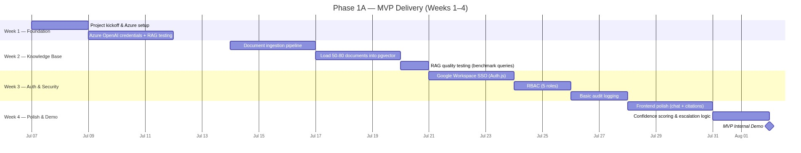
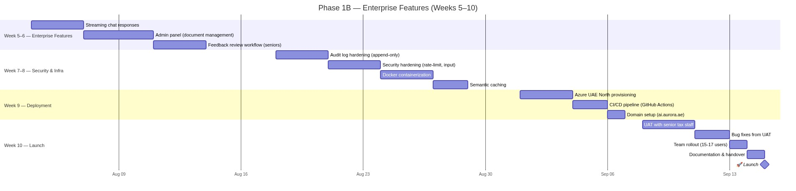
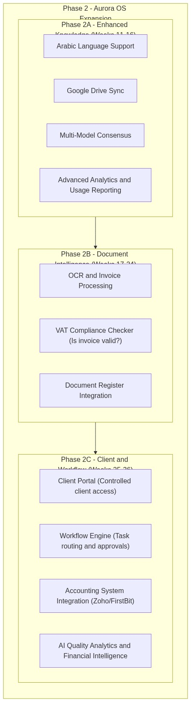
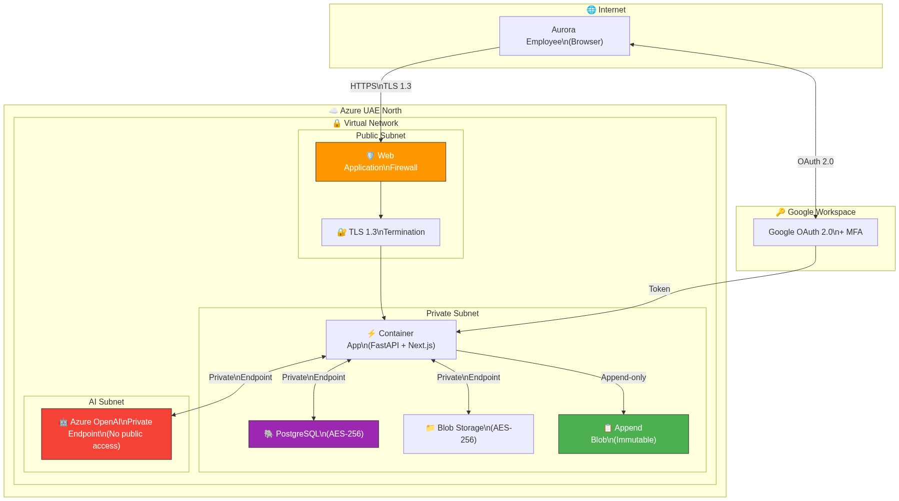
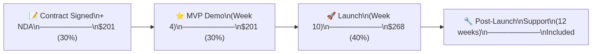

Technical & Financial Scoping Presentation
2026-06-28

Key Pillars of the Aurora AI Brain
┌──────────────────────────────────────────────────────────────────┐
│ 🔒 Aurora AI Assistant Svetlana A. (Admin) │
│ ─────────────────────────────────────────────────────────────── │
│ 👤 Can we recover VAT on a hotel invoice for a business trip? │
│ │
│ 🤖 No. Input VAT on hotel accommodation for business travel │
│ outside the UAE is not recoverable under the UAE VAT law. │
│ │
│ 📎 Sources: │
│ [1] VAT Executive Regulations, Art. 54(1) ▸ │
│ [2] FTA Public Clarification VATP012 ▸ │
│ │
│ Confidence: ████████████░░ 92% (High) │
│ 👍 Correct 👎 Incorrect ⚠️ Needs Improvement │
└──────────────────────────────────────────────────────────────────┘
RAG Retrieval & Guardrail Pipeline

Comprehensive System Architecture

Admin Self-Service Document Ingestion
The system integrates directly with Aurora’s Google ecosystem:
@aurora.ae accounts.
Phase 1A Gantt Schedule

Phase 1B Gantt Schedule

Aurora OS Modular Modules
| Phase | Scope | Duration | Market Rate (USD) | Our Price (USD) | Our Price (AED) | Savings |
|---|---|---|---|---|---|---|
| Phase 1A | Core RAG, Google SSO, Citations, Escalation, MVP Demo | 4 weeks | $7,500 – $13,200 | $310 | 1,138 | ~96–98% |
| Phase 1B | Streaming, Admin panel, Audit logging, Azure UAE deployment | 6 weeks | $8,000 – $14,000 | $360 | 1,322 | ~95–97% |
| Total | Complete Phase 1 Production System | 10 weeks | $15,500 – $27,200 | $670 | 2,460 | ~96% |
Note on Development Tool Expenses
These prices cover labor only. Ongoing monthly infrastructure costs and self-funded dev tools are billed directly to their respective accounts.
| Module | Scope | Duration | Market Rate (USD) | Our Price (USD) | Our Price (AED) | Savings |
|---|---|---|---|---|---|---|
| Phase 2A | Arabic, Google Drive sync, consensus, advanced analytics | 6 weeks | $8,000 – $15,000 | $670 | 2,460 | ~91–96% |
| Phase 2B | OCR/document processing, VAT compliance check, doc register | 8 weeks | $10,000 – $20,000 | $890 | 3,268 | ~91–96% |
| Phase 2C | Client portal, workflow engine, accounting API, QA analytics | 12 weeks | $15,000 – $30,000 | $1,340 | 4,921 | ~91–96% |
| Total | Full Aurora OS Platform | ~26 weeks | $33,000 – $65,000 | $2,900 | 10,650 | ~91–96% |
These are standard cloud costs paid directly to Microsoft Azure:
| Service | SKU / Details | Monthly Cost (USD) | Monthly Cost (AED) | Rationale |
|---|---|---|---|---|
| Azure OpenAI | GPT-4o pay-as-you-go | $30 – $90 | 110 – 331 | Based on 15 users, 30–80 queries/day |
| Azure OpenAI | text-embedding-3-small | <$1 | <4 | Vector search model costs |
| Container Apps | Compute (0.5 vCPU / 1 GiB) | $0 – $15 | 0 – 55 | Serverless, scale-to-zero |
| Azure PostgreSQL | B1ms server + 32 GiB storage | $15 – $20 | 55 – 73 | Burstable DB for user info and logs |
| Azure Storage | Blob Storage Hot tier (~1 GB) | $0.50 – $1 | 2 – 4 | raw PDFs + logs storage |
| Domain & TLS | custom domain TLS cert | $1 – $3 | 4 – 11 | HTTPS custom routing |
| Total Monthly | $47 – $130 | 173 – 477 | Conservative cost estimate |

Secured Azure VNet Architecture
| Project Brief Requirement (§6) | Our Implementation Strategy |
|---|---|
| No model training on Aurora data | Azure OpenAI Enterprise terms guarantee zero data retention. |
| Encryption in Transit & Rest | TLS 1.3 for connections; AES-256 for PostgreSQL, Blobs, and Logs. |
| Role-Based Access Control | Admin, Tax Manager, Senior, Junior, Auditor roles. |
| Tamper-Evident Audit Logs | Implemented using Azure Immutable Blob Storage. |
| Data Residency | All resources hosted in Azure UAE North data center (Dubai). |
| Immediate Revocation | Workspace account termination disables system access instantly. |
We are starting with a fully functional prototype, not from scratch:

Milestones & Payment Structure